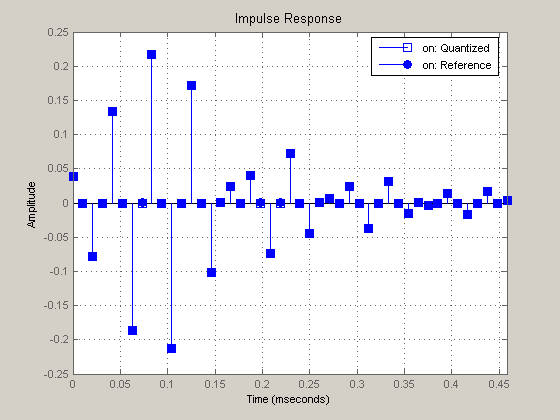

This demonstration illustrates how to generate HDL code for a minimum phase FIRT filter with 10-bit input data and 10-bit output data. This is a bandpass filter with sample rate of 96 kHz and passband from approximately 19 kHz to 29 kHz. This type of filter is commonly used in feedback loops where linear phase is not sufficient and minimum phase or as close as is achievable is required.
Design the filter using firgr, which uses the generalized Remez design method. The use of the 'minphase' argument to firgr forces a minimum phase filter design. Then, use fvtool to visualize the filter response.
Fs = 96000; Fn = Fs/2; f = [0 17000 20000 28000 31000 Fn]/Fn; a = [0 0 1 1 0 0]; w = [5 1 5]; b = firgr(44, f, a, w, 'minphase'); hfvt = fvtool(b,'Fs', Fs, 'MagnitudeDisplay', 'Magnitude (dB)'); legend(hfvt, 'Min. Phase');
Check the phase response of the filter.
set(hfvt, 'Analysis', 'phase'); legend(hfvt, 'Min. Phase');
Having checked the minimum phase filter design, construct a fixed-point version. Use 10-bit input and output with the internal products automatically scaled. Set the coefficient word length to 15 bits. Set the accumulator word length to 31 bits and let the fraction length be computed automatically.
Hd = dfilt.dffirt(b); Hd.Arithmetic = 'fixed'; Hd.CastBeforeSum = false; Hd.RoundMode = 'floor'; Hd.OverflowMode = 'saturate'; Hd.InputWordLength = 10; Hd.InputFracLength = 9; Hd.OutputWordLength = 10; Hd.OutputMode = 'SpecifyPrecision'; Hd.OutputFracLength = 9; Hd.AccumWordLength = 33; Hd.StateWordLength = 33; Hd.StateAutoScale = false; Hd.StateFracLength = Hd.AccumFracLength; Hd.CoeffWordLength = 14;
Check the quantized filter relative to the reference design. The magnitude response is correct but the phase response is no longer min-phase, due to quantization.
hfvt = fvtool(Hd, 'Fs', Fs, 'Analysis', 'freq'); legend(hfvt, 'on');
Plot the impulse response of the quantized filter. Many of the coefficients have quantized to zero and the overall response still meets the specification, even though the zeros have made the phase response non-minimum. These zeros lead to a smaller implementation because HDL code is not generated for multiplies by zero.
set(hfvt, 'Analysis', 'Impulse');
Starting from the quantized filter, generate VHDL or Verilog. You have the option of generating a VHDL, Verilog, or ModelSim .do file test bench to functionally verify that the HDL design matches the MATLAB filter exactly.
Create a temporary work directory. After generating the HDL code (Verilog in this case), open the generated file in the editor.
To generate VHDL instead, change the property 'TargetLanguage', from 'Verilog' to 'VHDL'.
workingdir = tempname; generatehdl(Hd,'Name', 'hdlminphasefilt', 'TargetLanguage', 'Verilog',... 'TargetDirectory', workingdir); edit(fullfile(workingdir, 'hdlminphasefilt.v'));
### Starting Verilog code generation process for filter: hdlminphasefilt ### Generating hdlminphasefilt.v file in: C:\Temp\tp025562 ### Starting generation of hdlminphasefilt Verilog module ### Starting generation of hdlminphasefilt Verilog module body ### HDL latency is 2 samples ### Successful completion of Verilog code generation process for filter: hdlminphasefilt
Generate a Verilog test bench to verify that the result match the results in MATLAB. Use the chirp predefined input stimulus. After generating the test bench code, open the generated file in the editor. To generate a VHDL test bench instead, change the second argument from 'Verilog' to 'VHDL'.
generatetb(Hd, 'Verilog', 'TestBenchName', 'hdlminphasefilt_tb',... 'TestBenchStimulus', 'chirp',... 'TargetDirectory', workingdir); edit(fullfile(workingdir, 'hdlminphasefilt_tb.v'));
### Starting generation of Verilog Test Bench ### Generating input stimulus ### Done generating input stimulus; length 1069 samples. Warning: Integers greater than 32 bits not supported in the INT method. Returning DOUBLE instead. To get exact integer representation for any arbitrary word length, use INTARRAY, BIN, OCT, DEC, or HEX. Warning: Integers greater than 32 bits not supported in the INT method. Returning DOUBLE instead. To get exact integer representation for any arbitrary word length, use INTARRAY, BIN, OCT, DEC, or HEX. ### Generating Verilog file hdlminphasefilt_tb.v in: C:\Temp\tp025562 ### Done generating Verilog test bench.
Plot the filter input stimulus and output response on separate plots.
x = generatetbstimulus(Hd,'TestBenchStimulus','chirp'); xrange = (0:length(x) - 1).*( Fn / (length(x) - 1))/1e3; y = filter(Hd,x); subplot(2,1,1); plot(xrange, x); ylim(ylim.*1.1); title('HDL Min Phase Filter Chirp Stimulus.'); xlabel('Frequency in kHz'); subplot(2,1,2); plot(xrange, y); ylim(ylim.*1.1); title('HDL Min Phase Filter Response.'); xlabel('Frequency in kHz');
You designed a double-precision for minimum phase and then converted it to a quantized fixed-point filter. You then generated Verilog code for the filter design and a Verilog test bench to functionally verify the results.
You can use a Verilog simulator, such as ModelSim, to verify these results.